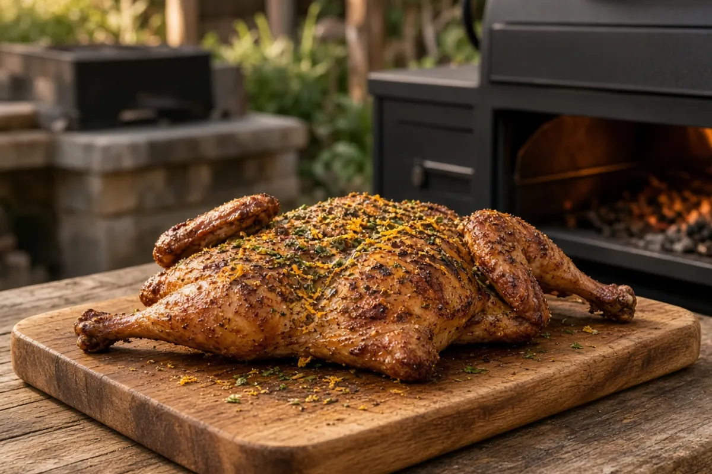

Smoked Spatchcock Turkey with Herb-Orange Dry Brine
A 12- to 15-pound turkey, spatchcocked and dry-brined 24 to 48 hours in the fridge, then smoked on a pellet grill until the skin is deep golden and the breast hits 160°F. About 4 hours of active prep, smoking, and rest after the brine.

12 servings
By
Yield: About 12 servings (turkey up to 15 lb)
Prep:
Dry brine: 24 to 48 hours in the fridge, uncovered (not counted in the total)
Cook:
Rest: 30 minutes
Total:
Difficulty: Medium
Ingredients
- 1 whole turkey, 12 to 15 pounds, thawed, giblets removed
- 1/4 cup Diamond Crystal kosher salt (or 3 Tbsp Morton kosher salt; use 3 Tbsp Diamond Crystal for a 12- to 13-pound bird)
- 1 Tbsp light brown sugar
- 1 Tbsp coarse black pepper
- 2 tsp garlic powder
- 2 tsp dried thyme (or 1 Tbsp fresh, chopped)
- 1 tsp rubbed sage
- 1 tsp smoked paprika
- 1 orange, zested
- 1 tsp baking powder
- 2 Tbsp melted butter, optional, for brushing
Instructions
- Two days ahead (Tuesday night for Thanksgiving), spatchcock the turkey with kitchen shears: cut out the backbone (save it for gravy), flip, and press the breastbone flat. Pat the turkey very dry, 15 minutes.
- Mix the kosher salt, brown sugar, black pepper, garlic powder, thyme, sage, smoked paprika, and orange zest. Stir in the baking powder right before using, 3 minutes.
- Loosen the skin and rub about two-thirds of the dry brine directly on the breast and thigh meat under the skin, then the rest over the skin and back, 5 minutes.
- Set the turkey on a rack over a sheet pan and refrigerate uncovered 24 to 48 hours. Do not rinse.
- Pull the turkey from the fridge 30 minutes before cooking. Heat the pellet grill to 275°F with hickory, pecan, or cherry pellets, 30 minutes.
- Smoke the turkey skin side up at 275°F for 1 hour.
- Raise the grill to 325 to 350°F and brush with the melted butter if using. Cook until the breast reads 160°F and the thighs 175°F, about 1 1/2 to 2 more hours for a 15-pound bird (start checking at 2 hours total).
- Rest 30 minutes loosely tented (carryover to about 165°F in the breast). Make gravy from the backbone and drippings meanwhile, then carve and serve.
Notes: Holds up to an hour wrapped loosely in foil in a dry cooler. The 24 to 48 hour uncovered dry brine in the fridge is not counted in the 4-hour total; start it two days ahead. Do not rinse the turkey before it goes on the grill.